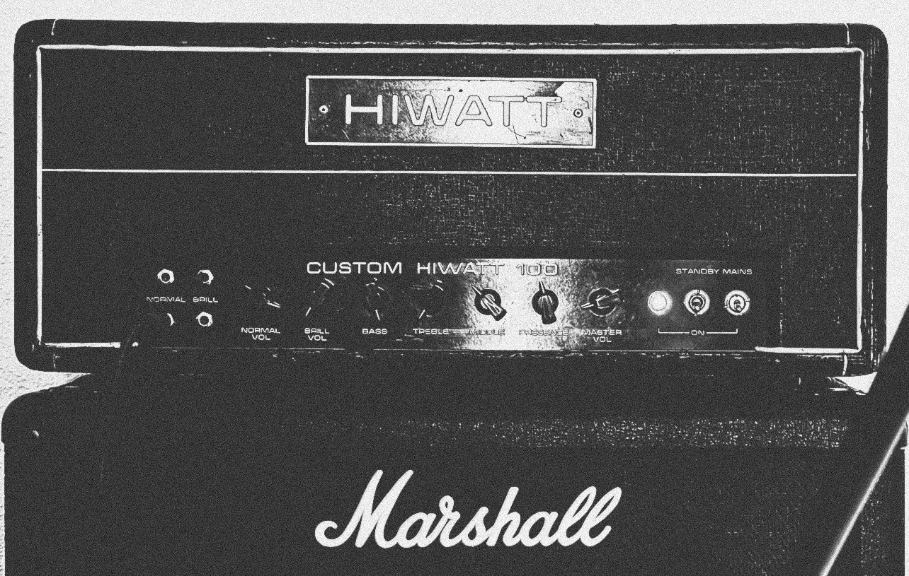

IR Pack Demo & Release Info
We're nearly done with the In Utero IR pack. Stay tuned for the final version — updates will be posted here and a YouTube video is in the works. For now, check out the demo below.
Experimental HSB Tone
Experimental Tourrettes Tone
Experimental Very Ape Tone
Amps Used
Hiwatt with m70 speakers
Fender Twin reverb with emminance speakers